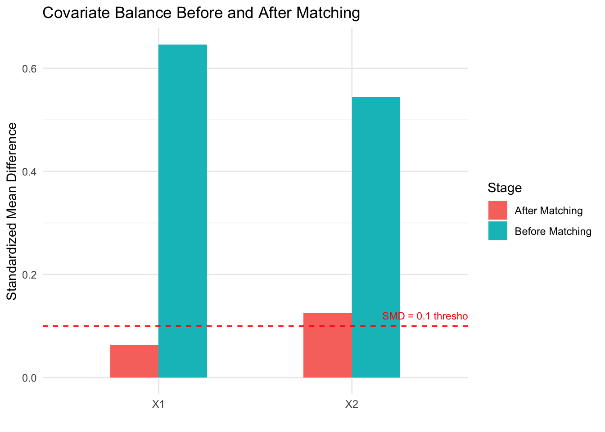
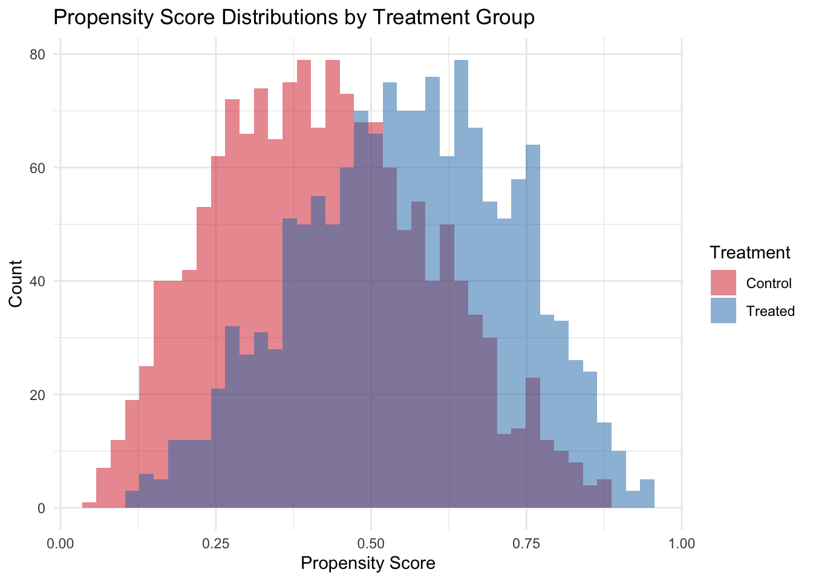

5 From Identification to Estimation
Class materials
Slides: Module 5
Textbook reading
Supplementary reading
Rosenbaum PR, Rubin DB. (1983). The Central Role of the Propensity Score in Observational Studies for Causal Effects. Biometrika, 70(1), 41–55.
Stuart EA. (2010). Matching Methods for Causal Inference: A Review and a Look Forward. Statistical Science, 25(1), 1–21.
Topics covered
- Identification vs estimation: why they are separate tasks
- Stratification and the curse of dimensionality
- Regression adjustment and g-computation
- Matching: exact, nearest-neighbor, propensity score, and coarsened exact
- The propensity score as a unifying concept
- Inverse probability weighting (IPW)
- Comparing methods: when to use what
- When the backdoor criterion cannot be satisfied: IV, DiD, RDD
5.1 Identification vs estimation
Every causal analysis involves two fundamentally different tasks, and conflating them is one of the most common mistakes in applied research.
Identification asks: can we express the causal quantity in terms of observable data? This is a conceptual question that does not depend on the dataset or sample size. It is answered by the tools from Module 4 — DAGs, the backdoor criterion, d-separation. For example: “If we adjust for age and smoking status, is the causal effect of the treatment on mortality identifiable?” If the answer is no (because of unmeasured confounders, collider bias, or some other structural problem), then no statistical method can rescue the analysis.
Estimation asks: given that identification holds, how do we compute the answer from a finite sample? This is a statistical question that depends on the data, the sample size, and our modeling choices. It is answered by the methods we will study in this module: stratification, regression, matching, IPW, and g-computation.
The key insight is that these are separate tasks with a strict ordering: identification must come first. A brilliant estimation strategy cannot rescue a failed identification argument. Conversely, a valid identification argument can be undermined by a poor estimator, but at least the conceptual foundation is sound.
In much applied research, the workflow jumps straight to estimation: collect data, run a regression “controlling for” available covariates, and report the treatment coefficient. This skips identification entirely — no DAG is drawn, no argument is made for why these variables (and not others) should be in the model. Some of the “control variables” may in fact be colliders or mediators, and adjusting for them can introduce bias rather than remove it.
This module assumes that identification has been established via the tools from Module 4. Our question from here on is: given the right adjustment set, what is the best way to estimate the causal effect?
5.2 Stratification
Stratification is the most intuitive approach to confounding adjustment: divide the data into subgroups (strata) defined by confounders, estimate the treatment effect within each stratum, then combine the stratum-specific estimates into an overall effect. This is precisely the adjustment formula from Module 3:
\[ \text{ATE} = \sum_x \Big\{ E[Y \mid W = 1, X = x] - E[Y \mid W = 0, X = x] \Big\} \Pr(X = x) \]
Stratification is transparent and requires no modeling assumptions. However, it suffers from the curse of dimensionality: with many confounders, the number of strata grows exponentially (5 binary confounders produce 32 strata; 10 produce 1,024), and most strata will be empty or contain too few observations for meaningful comparisons. This makes stratification impractical as the sole adjustment strategy in most real-world studies, motivating the more scalable methods below.
set.seed(42)
n <- 2000
age_group <- sample(c("Young", "Old"), n, replace = TRUE, prob = c(0.5, 0.5))
# Confounding: older patients more likely to be treated
treat_prob <- ifelse(age_group == "Old", 0.7, 0.3)
W <- rbinom(n, 1, treat_prob)
# True treatment effect = -5 (reduces BP), but old have higher baseline BP
Y <- 120 + 15 * (age_group == "Old") - 5 * W + rnorm(n, sd = 10)
df <- data.frame(age_group, W, Y)
# Naive estimate (biased by confounding)
naive <- mean(df$Y[df$W == 1]) - mean(df$Y[df$W == 0])
cat("Naive estimate:", round(naive, 2), "\n")## Naive estimate: 1.29# Stratified estimate
strata <- split(df, df$age_group)
effects <- sapply(strata, function(s) mean(s$Y[s$W == 1]) - mean(s$Y[s$W == 0]))
weights <- sapply(strata, nrow) / n
stratified <- sum(effects * weights)
cat("Stratified estimate:", round(stratified, 2), "\n")## Stratified estimate: -4.38## True effect: -5The naive estimate is biased because older patients (who have higher baseline blood pressure) are more likely to receive treatment. The stratified estimate, which compares treated and control patients within each age group before averaging, recovers an estimate close to the true effect of -5.
5.3 Regression adjustment and g-computation
Regression adjustment is the most common approach to confounding control in applied research. The basic idea is to fit a model that includes both the treatment and the confounders, then interpret the treatment coefficient as the adjusted causal effect:
\[ Y_i = \beta_0 + \beta_1 W_i + \beta_2 X_i + \varepsilon_i \]
Under this model, \(\beta_1\) represents the treatment effect “adjusted for” \(X\). However, this interpretation relies on assumptions that are often left unstated: linearity (the effect of \(X\) on \(Y\) is linear), no interaction (the treatment effect is the same at every level of \(X\)), and correct specification (no omitted confounders, no unnecessary variables). When these assumptions fail, the regression coefficient may not correspond to any meaningful causal estimand.
G-computation (also called standardization or the parametric g-formula) offers a more principled alternative. Rather than reading off a coefficient, g-computation proceeds in three steps: (1) fit a model for \(E[Y \mid W, X]\) that can include interactions and nonlinearities, (2) predict each person’s outcome under treatment (\(W=1\)) and under control (\(W=0\)), and (3) average the individual-level contrasts. This approach explicitly targets the ATE and allows for treatment effect heterogeneity.
set.seed(42)
n <- 3000
X <- rnorm(n)
W <- rbinom(n, 1, plogis(0.5 * X))
# True effect varies with X: ATE = E[2 + 0.5*X] = 2
Y <- 1 + (2 + 0.5 * X) * W + 1.5 * X + rnorm(n)
df <- data.frame(X, W, Y)
# Standard regression (assumes constant effect)
reg <- lm(Y ~ W + X, data = df)
cat("Regression coefficient for W:", round(coef(reg)["W"], 3), "\n")## Regression coefficient for W: 1.985# G-computation (allows heterogeneous effects)
model <- lm(Y ~ W * X, data = df)
df$Y1 <- predict(model, newdata = transform(df, W = 1))
df$Y0 <- predict(model, newdata = transform(df, W = 0))
gcomp_ate <- mean(df$Y1 - df$Y0)
cat("G-computation ATE:", round(gcomp_ate, 3), "\n")## G-computation ATE: 1.981## True ATE: 2Both the standard regression and g-computation recover estimates close to the true ATE of 2 in this example. However, g-computation is more transparent about what it estimates: it explicitly constructs counterfactual predictions for each individual, making the estimand clear. In settings with strong treatment effect heterogeneity or nonlinear confounding, g-computation can outperform simple regression adjustment.
5.4 Matching
Matching tries to reconstruct what a randomized experiment would have looked like by finding, for each treated unit, one or more control units with similar confounder values. The treatment effect is then estimated by comparing outcomes within matched pairs.
There are several matching approaches: exact matching requires identical confounder values (perfect balance but often infeasible), nearest-neighbor matching pairs units based on a distance metric like Mahalanobis distance, propensity score matching reduces the problem to matching on the estimated probability of treatment, and coarsened exact matching (CEM) bins confounders into categories before exact matching. Each approach has trade-offs between balance quality, feasibility, and sample size retention.
A critical step after any matching procedure is checking covariate balance: comparing the distribution of each confounder between the matched treated and control groups. Standardized mean differences (SMDs) below 0.1 are generally considered acceptable. If balance is poor, the matching has failed and the effect estimate will be biased.
# install.packages("MatchIt") # if needed
library(MatchIt)
set.seed(42)
n <- 2000
X1 <- rnorm(n)
X2 <- rnorm(n)
W <- rbinom(n, 1, plogis(-1 + 0.8 * X1 + 0.6 * X2))
Y <- 3 * W + 1.5 * X1 + X2 + rnorm(n) # True ATE = 3
df <- data.frame(X1, X2, W, Y)
# Naive estimate
naive <- mean(df$Y[df$W == 1]) - mean(df$Y[df$W == 0])
cat("Naive estimate:", round(naive, 2), "\n")## Naive estimate: 4.46# Propensity score matching
m <- matchit(W ~ X1 + X2, data = df, method = "nearest", ratio = 1)
matched_df <- match.data(m)
# Check balance
summary(m)##
## Call:
## matchit(formula = W ~ X1 + X2, data = df, method = "nearest",
## ratio = 1)
##
## Summary of Balance for All Data:
## Means Treated Means Control Std. Mean Diff. Var. Ratio eCDF Mean eCDF Max
## distance 0.3916 0.2413 0.8204 1.4353 0.2423 0.3674
## X1 0.4445 -0.1980 0.7041 0.8921 0.1850 0.2987
## X2 0.3812 -0.1686 0.5492 1.0651 0.1567 0.2417
##
## Summary of Balance for Matched Data:
## Means Treated Means Control Std. Mean Diff. Var. Ratio eCDF Mean eCDF Max Std. Pair Dist.
## distance 0.3916 0.3648 0.1466 1.4242 0.0188 0.1127 0.1471
## X1 0.4445 0.3885 0.0614 1.1145 0.0132 0.0440 0.7915
## X2 0.3812 0.2621 0.1189 1.2269 0.0332 0.0951 0.8820
##
## Sample Sizes:
## Control Treated
## All 1432 568
## Matched 568 568
## Unmatched 864 0
## Discarded 0 0# Estimate ATT from matched data
att <- mean(matched_df$Y[matched_df$W == 1]) - mean(matched_df$Y[matched_df$W == 0])
cat("Matched estimate (ATT):", round(att, 2), "\n")## Matched estimate (ATT): 3.12## True effect: 3# Visualize balance improvement
library(ggplot2)
balance_before <- data.frame(
Variable = c("X1", "X2"),
SMD = c(
abs(mean(df$X1[df$W == 1]) - mean(df$X1[df$W == 0])) / sd(df$X1),
abs(mean(df$X2[df$W == 1]) - mean(df$X2[df$W == 0])) / sd(df$X2)
),
Stage = "Before Matching"
)
balance_after <- data.frame(
Variable = c("X1", "X2"),
SMD = c(
abs(mean(matched_df$X1[matched_df$W == 1]) - mean(matched_df$X1[matched_df$W == 0])) / sd(matched_df$X1),
abs(mean(matched_df$X2[matched_df$W == 1]) - mean(matched_df$X2[matched_df$W == 0])) / sd(matched_df$X2)
),
Stage = "After Matching"
)
balance <- rbind(balance_before, balance_after)
ggplot(balance, aes(x = Variable, y = SMD, fill = Stage)) +
geom_col(position = "dodge", width = 0.5) +
geom_hline(yintercept = 0.1, linetype = 2, color = "red") +
annotate("text", x = 2.4, y = 0.12, label = "SMD = 0.1 threshold", color = "red", size = 3) +
labs(title = "Covariate Balance Before and After Matching",
y = "Standardized Mean Difference", x = "") +
theme_minimal()
The naive estimate overestimates the treatment effect because confounders \(X_1\) and \(X_2\) are associated with both treatment and outcome. After propensity score matching, the standardized mean differences drop below the 0.1 threshold, indicating good balance. The matched estimate recovers a value close to the true effect of 3. The balance plot makes it easy to assess whether matching succeeded — a key advantage of matching as a design strategy.
5.5 The propensity score
The propensity score, \(e(X) = \Pr(W = 1 \mid X)\), is the probability of receiving treatment given the observed confounders. The foundational result of Rosenbaum and Rubin (1983) shows that if treatment is conditionally ignorable given confounders \(X\), then it is also conditionally ignorable given the propensity score alone:
\[ Y(0), Y(1) \perp W \mid X \quad \Longrightarrow \quad Y(0), Y(1) \perp W \mid e(X) \]
This reduces a potentially high-dimensional adjustment problem (many confounders) to a one-dimensional problem (the propensity score). The propensity score is not a method itself — it is a tool that can be used within matching, weighting, stratification, or regression. In practice, the propensity score is estimated using logistic regression or machine learning methods (random forests, gradient boosting). The goal is not to predict treatment assignment as accurately as possible, but to achieve covariate balance between treated and control groups. A propensity score model that perfectly predicts treatment can actually be harmful, producing extreme weights that inflate variance.
5.6 Inverse probability weighting (IPW)
Inverse probability weighting takes a different approach from matching: instead of selecting comparable units, it reweights each observation to create a pseudo-population where treatment is independent of confounders. The IPW estimator for the ATE is:
\[ \widehat{\text{ATE}}_{\text{IPW}} = \frac{1}{n}\sum_{i=1}^n \frac{W_i Y_i}{\hat{e}(X_i)} - \frac{1}{n}\sum_{i=1}^n \frac{(1 - W_i) Y_i}{1 - \hat{e}(X_i)} \]
The intuition is straightforward: if a treated person had a low probability of being treated, they represent many similar people who were not treated, so we upweight them. This reweighting creates a pseudo-population where treatment is balanced across confounder levels, mimicking what an RCT would have produced.
set.seed(42)
n <- 3000
X <- rnorm(n)
W <- rbinom(n, 1, plogis(0.8 * X))
Y <- 2 * W + 1.5 * X + rnorm(n) # True ATE = 2
df <- data.frame(X, W, Y)
# Estimate propensity score
ps_model <- glm(W ~ X, data = df, family = binomial)
df$ps <- predict(ps_model, type = "response")
# IPW weights
df$weight <- ifelse(df$W == 1, 1 / df$ps, 1 / (1 - df$ps))
# IPW estimate
ipw_ate <- weighted.mean(df$Y[df$W == 1], df$weight[df$W == 1]) -
weighted.mean(df$Y[df$W == 0], df$weight[df$W == 0])
cat("IPW estimate:", round(ipw_ate, 2), "\n")## IPW estimate: 2.02# Compare to naive and regression
naive <- mean(df$Y[df$W == 1]) - mean(df$Y[df$W == 0])
reg <- coef(lm(Y ~ W + X, data = df))["W"]
cat("Naive estimate:", round(naive, 2), "\n")## Naive estimate: 3.09## Regression estimate: 2## True ATE: 2# Visualize propensity score distributions
ggplot(df, aes(x = ps, fill = factor(W))) +
geom_histogram(alpha = 0.5, position = "identity", bins = 40) +
labs(title = "Propensity Score Distributions by Treatment Group",
x = "Propensity Score", y = "Count", fill = "Treatment") +
scale_fill_manual(values = c("0" = "#d62728", "1" = "#1f77b4"),
labels = c("Control", "Treated")) +
theme_minimal()
The propensity score histogram reveals the overlap between treated and control groups. Good overlap (substantial region where both distributions have mass) is essential for IPW to work well. When propensity scores are near 0 or 1, weights become extreme and estimates become unstable — a signal of positivity violation. Practical remedies include trimming (dropping units with extreme scores) and stabilized weights (multiplying by the marginal probability of treatment).
5.7 Comparing methods and choosing the right approach
No single adjustment method is always best. Stratification is transparent but limited to few confounders. Regression is the most common but relies on functional form assumptions. Matching is intuitive and nonparametric but typically estimates the ATT rather than the ATE. IPW uses all observations and can target either estimand but is sensitive to extreme propensity scores. Doubly robust estimators combine regression and IPW, providing consistent estimates if either the outcome model or the propensity score model is correctly specified — a powerful insurance policy.
The most important insight from this module is that the choice of which variables to adjust for (Module 4’s backdoor criterion) matters more than the choice of how to adjust. A perfect matching algorithm applied to the wrong set of variables will still produce biased results. Conversely, even simple regression on the right set of variables can yield credible estimates.
When the backdoor criterion cannot be satisfied — because there are unmeasured confounders that cannot be adjusted for — researchers must turn to alternative identification strategies. Instrumental variables (IV) exploit a source of exogenous variation that affects treatment but not the outcome directly. Difference-in-differences (DiD) uses before/after comparisons with a control group to difference out time-invariant confounders. Regression discontinuity (RDD) exploits threshold rules for treatment assignment. These quasi-experimental designs relax the no-unmeasured-confounding assumption but require different, often equally strong, assumptions. We will revisit these strategies in Module 7.